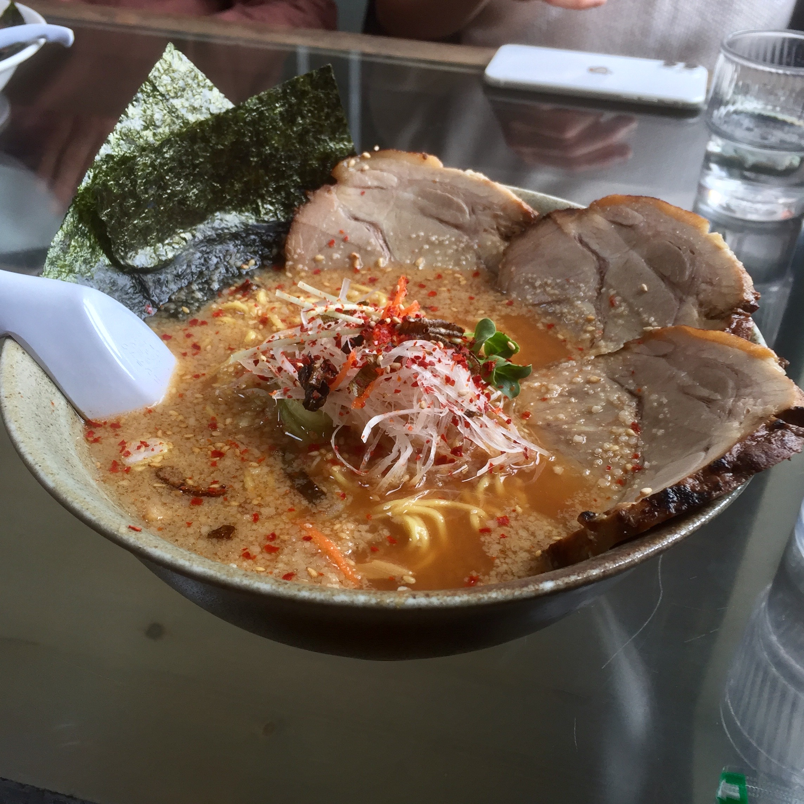
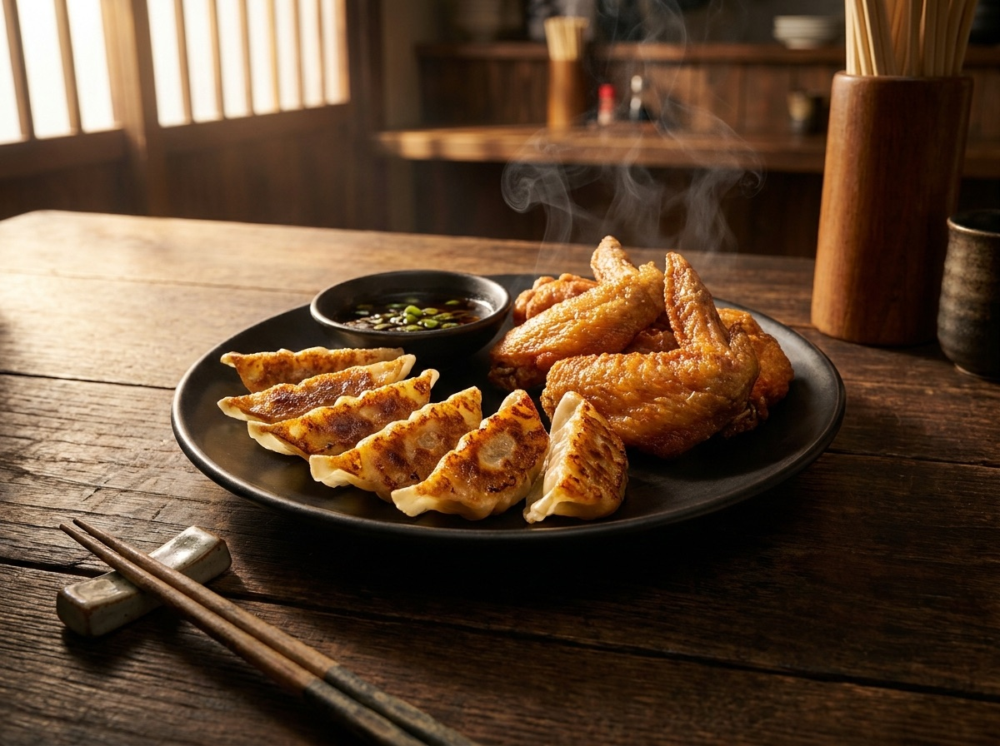
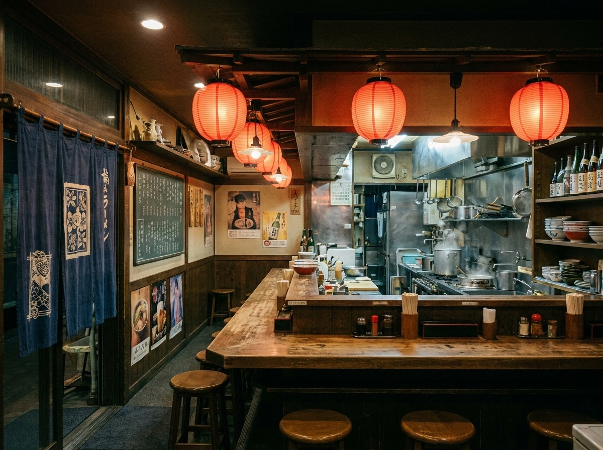

ASAHIKAWA RAMEN ・ SINCE 1972
濃厚だがやさしいスープに、低加水のちぢれ麺。創業から半世紀、旭川で愛され続ける一杯を、変わらぬ味でお届けします。
豚と魚介を重ねた、コクがあるのに後味すっきり。毎日炊き上げる自慢の一杯です。
スープをよく持ち上げる、旭川伝統の中細ちぢれ麺。のど越しの良さが自慢です。
じっくり煮込み、香ばしく炙った自慢の一枚。スープとの相性は格別です。

創業から続く定番。澄んだ醤油のコクと、ちぢれ麺の調和をぜひ。

皮から手作りの一品。ラーメンのお供に、もう一つの名物です。

変わらぬカウンターで味わう、湯気の立つできたての一杯を。
※お品書き・価格は納品時に実店舗の内容へ差し替えます。
昭和47年の創業以来、旭川で愛され続ける味を守っています。
ラーメン百名店 HOKKAIDO 2024 に選出された、たしかな実力です。
多くのお客様に支持される、旭川を代表する一杯です。
CONTACT
大人数・お持ち帰りのご相談もお電話でお気軽にどうぞ。